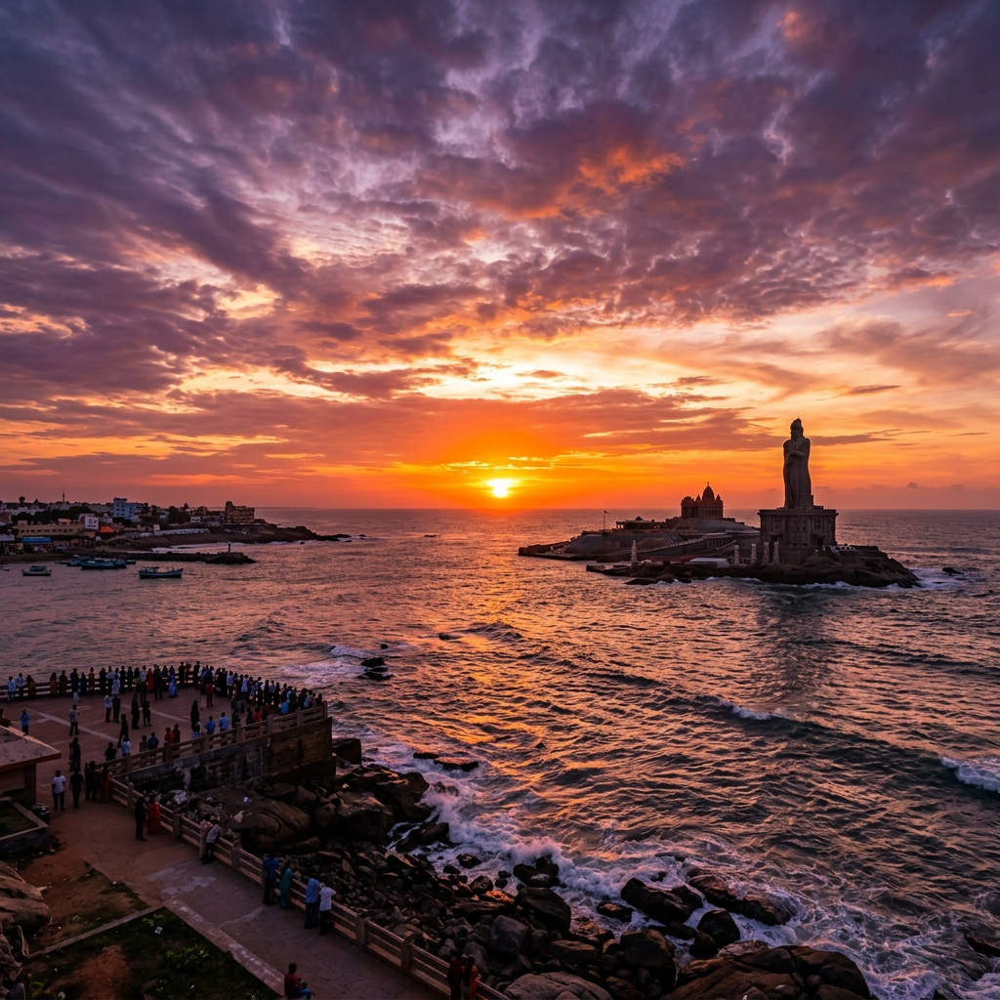

Glimpses of Kanniyakumari
×

Image Title
Image Description
A virtual journey to India's southernmost tip —
where three seas kiss the sky
Immersive digital views from the land's end
Watch the sun rise over the meeting point of three oceans in 360°
Enter Sunrise ViewWalk the rock island digitally, explore the meditation hall and mandapam
Start Virtual WalkExperience the divine atmosphere of the ancient coastal temple
Enter DarshanKanniyakumari is deeply rooted in history, spirituality, and breathtaking natural beauty. It is the only place in India where you can watch the sunrise and sunset from the exact same spot. For centuries, it has been a beacon for travelers, saints, and poets.
Our mission is to bring the magic of the southernmost tip of India to the world. Step into the rich heritage, feel the ocean breeze, and explore the monuments in a stunning virtual space.

Image Description
Meditation hall on an island rock.
133 feet tall stone sculpture.
3000-year-old sanctuary.
Where Mahatma's ashes were kept.
Best viewing galaries.
Wooden palace of ancient kings.
Grand puja at Bhagavathy Amman temple
Lamp procession along the beach at night
Cultural programmes at Rock Memorial
Nine nights of classical dance and devotion
Kanniyakumari Railway Station
TNSTC buses from all TN cities
Trivandrum Airport (TRV) — 90 km away